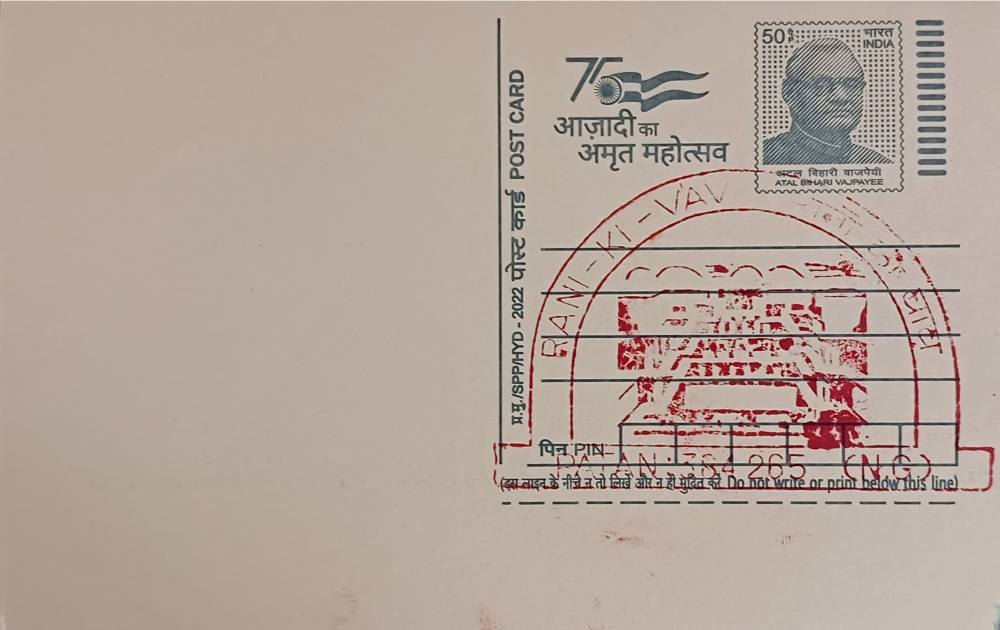

Rani Ki Vav (Stepwell)
રાણી કી વાવ (પગથિયાંવાળો કૂવો)


The name Rani ki Vav, literally 'the Queen's Stepwell', records both its builder and its purpose: it was commissioned by Queen Udayamati, daughter of Khengara of the Saurashtra Chudasama line and consort of the Chaulukya (Solanki) ruler Bhima I, as a memorial following his death. Tradition and inscriptional evidence place the work's start around 1063 CE, with completion attributed to roughly two decades later under the patronage of their son, Karna. Sited on the banks of the now largely dry Saraswati river at Patan, then the Chaulukya capital of Anahilapataka, the stepwell belongs to a distinctly Gujarati tradition of memorial water architecture rather than a single founding legend of the kind attached to many temples.
As a monument type, Rani ki Vav belongs to the vav or baoli tradition of stepped wells that once served much of arid western India as sources of water, shade and seasonal gathering space, but it is distinguished by the scale and density of its religious carving. Conceived as an inverted temple, the structure inverts the usual vertical ascent toward the sacred by leading visitors downward through seven levels of steps toward the water table, treating the descent itself as an act of ritual approach. It is widely regarded by architectural historians as among the largest and most completely preserved stepwells on the subcontinent, a status formalised in June 2014 when UNESCO inscribed it as a World Heritage Site, citing it as a masterpiece of subterranean water architecture built to Maru-Gurjara stylistic conventions.
The excavated structure measures approximately 64 metres in length, 20 metres in width and some 28 metres in depth, organised along an east-west axis with a stepped corridor descending through seven terraced levels to a circular well shaft at its western end. More than five hundred major sculptural panels and upward of a thousand minor ones line its walls and pillared pavilions, carved chiefly in sandstone in the ornate Maru-Gurjara idiom shared with contemporary Chaulukya temple architecture elsewhere in Gujarat and Rajasthan. The sculptural programme is overwhelmingly Vaishnavite, built around the dashavatara, the ten principal incarnations of Vishnu, interspersed with apsaras, nagakanyas, sages and scenes of secular court life, reflecting the theological priorities of eleventh-century Chaulukya patronage.
A particular feature distinguishing Rani ki Vav from most surviving stepwells is the condition in which it has reached the present day: flooding of the Saraswati by around the thirteenth century buried the entire structure under layers of silt and debris, which paradoxically shielded its carvings from the erosion, iconoclasm and structural wear that damaged many comparable monuments left exposed above ground. The stepwell remained effectively lost for roughly seven centuries until its upper levels were identified during surveys in the 1940s, with its full extent, including the deep well shaft and lowest galleries, only being uncovered through systematic excavation carried out by the Archaeological Survey of India between 1981 and 1987.
The site today is maintained as a protected monument under the Archaeological Survey of India, which continues conservation and drainage management to control groundwater seepage that periodically affects the lower levels, and it draws a steady flow of domestic and international visitors as one of Gujarat's principal heritage attractions alongside the nearby Sahastralinga tank remains. Its public recognition extends beyond archaeological circles: since 2018 the Reserve Bank of India has featured a depiction of Rani ki Vav on the reverse of the redesigned one-hundred-rupee note, placing the stepwell among a small set of monuments chosen to represent the country's architectural heritage on its currency.
| Date of Introduction | October 9, 2002 |
|---|---|
| Address | Sub Postmaster, |
| Patan (NG) SO, | |
| Patan (dt.), Gujarat - 384265. |